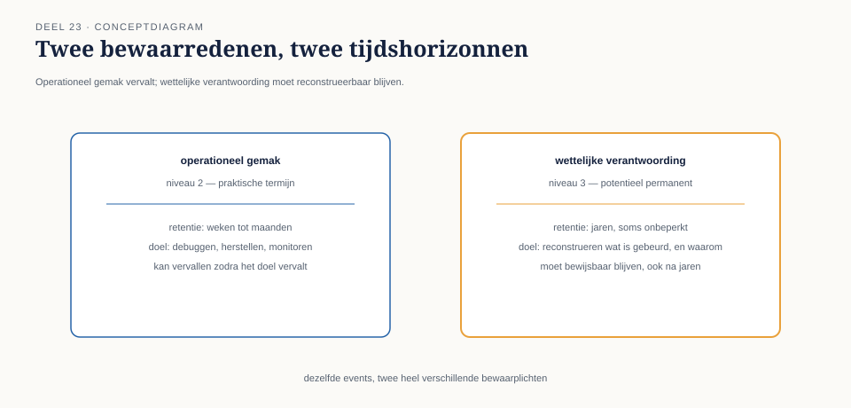

23.0 Een nieuwe opdracht, een nieuwe schaal
Sectie 1 van 6Caspar Rijnders is inmiddels senior integratiearchitect. Zijn nieuwe opdracht is de Stelselovergang: de overgang van Meridiaan naar het nieuwe pensioenstelsel (Wtp), met een wettelijke deadline van 1 januari 2028, drie verplichte verantwoordingsdocumenten richting DNB en AFM, en twee kernrisico's die de hele operatie beheersen — invaren (het overzetten van bestaande pensioenaanspraken naar het nieuwe stelsel) en datakwaliteit (de garantie dat elke overgezette aanspraak correct en herleidbaar is).
Het Mutatieplatform van niveau 2 blijft bestaan en functioneert, maar de Stelselovergang stelt eisen die niveau 2's ontwerp niet voorzag. Invaren is geen doorlopend operationeel proces zoals een salariscorrectie — het is een eenmalige, wettelijk verplichte, voor elke deelnemer individueel uit te voeren gebeurtenis, die vanaf het moment van uitvoering onomkeerbaar en auditeerbaar moet vaststaan. Bij een controle door DNB moet Meridiaan, jaren later, kunnen aantonen: welke gegevens golden voor deze deelnemer op het moment van invaren, welke berekening is toegepast, en wie of wat die berekening heeft uitgevoerd.
Dit is een ander soort eis dan alles wat niveau 1 en 2 tot nu toe stelden. Niveau 2's event backbone (deel 11) bewaarde gebeurtenissen al voor een praktische termijn, om laat aangesloten abonnees in te kunnen halen. De Stelselovergang vraagt iets fundamenteel anders: bewaring niet als operationeel gemak, maar als wettelijke verplichting, en niet voor een praktische termijn, maar potentieel voor de rest van het bestaan van de deelnemersrelatie.
